Mygind
Gesteinsart: Gneis
Höhe: 183 cm
Größte Breite: unbekannt
Größte Dicke: unbekannt
Runenhöhe: unbekannt
Runeninschrift:
ungedeutet


63 - Mygind - Letztes Update 17.09.2025
Listennummer : DR kein / DK MJy 103
| Navidaten: 56.38556 10.22065 oder: Smedebakken 2, 8544 Mørke |
Transliteration: Bislang ungedeutet
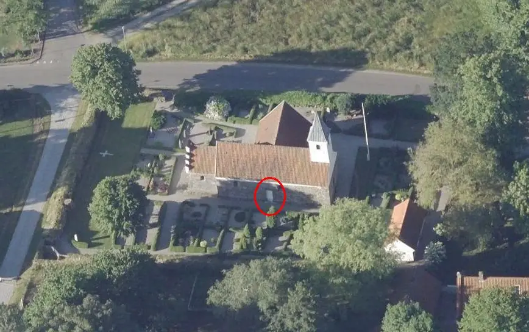
Das ist ein Luftfoto vom 28.06.2021 von Skråfoto - Lizenz: CC BY 4.0 - das die Kirche von Mygind zeigt. Skråfoto ist eine Webanwendung, die von Klimadatastyrelsen weltweit kostenlos bereitgestellt wird. Die Aufnahmen werden alle zwei Jahre erneuert (05.05.2017 / 19.04.2019 / 28.06.2021 / 01.04.2023 ) und neben einer Senkrechtaufnahme wird ein Schrägbild aus jeder Himmelsrichtung angeboten, das man über eine Adresssuche aufrufen kann. Den Runenstein "in situ" unter der zugemauerten Nordtür habe ich rot umrandet.
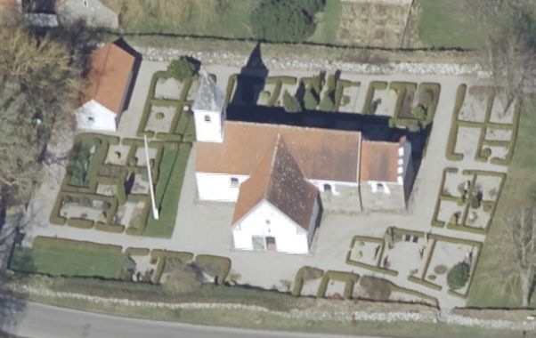
Dazu dieses obige Luftfoto vom 01.04.2023 aus anderer Perspektive.
Bei meiner 2013er Dänemark-Tour konnte ich am Donnerstag, 22. August, erstmals die Kirche in dem kleinen Ort Mygind besuchen. Unter der zugemauerten Nordtür liegt dort wohl schon seit Ewigkeiten ein Runenstein als Schwellenstein, der erst im Sommer des Jahres 2000 als solcher erkannt wurde.
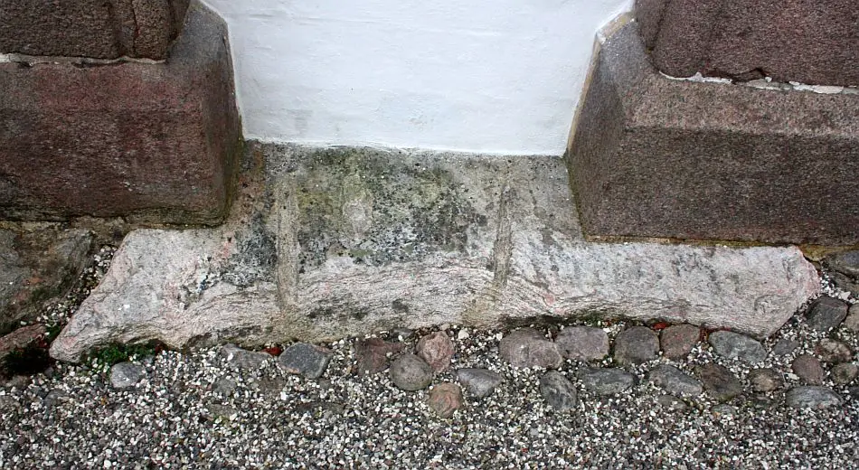
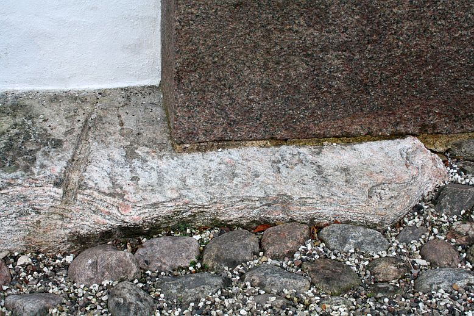
Die Bildqualität der beiden Fotos mag eine Erklärung dafür sein, dass die Runeninschrift ewig nicht als solche erkannt wurde.
Die Abmessungen konnten aufgrund seiner Lage nicht erfasst werden (Anm.: Länge 183 cm siehe unten). Er weist eine bislang unleserliche Inschrift auf. Sie besteht aus mindestens 3 parallel verlaufenden vertikalen Linien, die von unten nach oben gelesen werden. Die mittlere der 3 Linien weist wohl ein Kreuz auf, das den Beginn der Inschrift markieren könnte. Lisbeth M. Imer (*1973, Runologin am Nationalmuseum Kopenhagen) erklärt nun 2016 in ihrem Buch "Danmarks Runesten - en fortælling", S. 192, zu dem u.a. Foto von Roberto Fortuna, dass die Inschrift nicht gedeutet werden kann, aber dass der erkennbare Teil (unten rechts) wahrscheinlich sun (:) sin (seinen Sohn) heißt.
Der Runenstein wurde offenbar - wie andere Fundamentsteine auch - in jüngster Zeit durch Rillen beschädigt, um Feuchtigkeitsprobleme in der Kirche zu lindern.
Im Rahmen meiner 2022er Jütland Wikinger Tour war ich am Mittwoch, 15.06.2022, wieder vor Ort. Die Kirche war aber leider verschlossen und so konnte ich lediglich diese Außenaufnahmen machen. An der Situation des Runensteins hat sich bis dato nichts geändert.
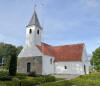 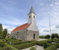 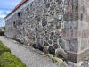 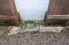 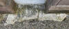 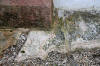 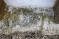 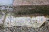


Im Vorfeld zu dem 2016 erschienenen Buch von Lisbeth M. Imer (*1973, Runologin am Nationalmuseum in Kopenhagen) "Danmarks Runesten - en fortælling" reiste die Runologin mit dem Fotografen Roberto Fortuna zur Bestandsaufnahme durch die Lande. Dieser hat die Runensteine mit Schräglicht aufgenommen und darüber wirklich herausragende Fotos erzielt. Diese Fotografie stammt vom 10.11.2014.
Der Digitale Sammlung des Nationalmuseums Kopenhagen entnommen. Lizenz: CC-BY-SA
Die Informationen zu diesem Runenstein aus der dänischen Runendatenbank finden sich hier.
Der entsprechende Eintrag in "Fund og Fortidsminder" ist hier verlinkt. Darin eingebettet ist u.a. auch ein Bewahrungsbericht des Steinkonservators Leif Vognsen mit einem Foto/Blick auf den Runenstein im Innern der Kirche. Er gibt darin auch erstmals die Länge mit 183 cm an.
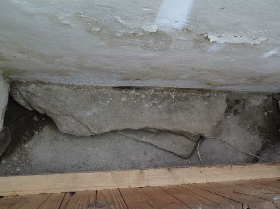
Daneben findet sich noch eine Fotoseite mit zwei sw Aufnahmen.
Über diesen Link finden sich zu dem Runenstein Informationen des Forschungsprojektes "Runes" der Akademie der Wissenschaften zu Göttingen.
Über diesen Link trifft man auf eine - in dänischer Sprache gehaltene - Abhandlung zur 3D Digitalisierung des Mygind Runensteins - "Runesten som digital kulturarv - Tre eksempler fra Djursland. Thomas Eggers-Kaas, Museum Østjylland Årbog 2020".
Basierend auf diesem Artikel kann man sich über diese Webseite u.a. von dem Mygind Runenstein ein 3D Modell als pdf-Datei downloaden und die dann in einem pdf-Reader anschauen, drehen, zoomen usw.
Allerdings
ist das Ganze etwas gewöhnungsbedürftig: Zunachst auf der Webseite eine der drei
Örtlichkeit auswählen, dann warten bis die PDF Reader Ansicht zu sehen ist - es
läuft ein Verlaufsbalken von links nach rechts und ein Blatt wird aufgerufen,
aber es tut sich dann nix, auch wenn es so aussieht als lädt da was. Deshalb
dann darüber auf "Download" über das sog. Hamburger
Menü " " gehen - die pdf-Datei
"Mygind.pdf" kann nun am eigenen PC
geöffnet werden. Hier am Beispiel von "Sjellbro.pdf".
" gehen - die pdf-Datei
"Mygind.pdf" kann nun am eigenen PC
geöffnet werden. Hier am Beispiel von "Sjellbro.pdf".

Aber es passiert auch jetzt erst einmal nix. Man muss erst noch dem "Inhalt einmal vertrauen" und irgendwie öffnet sich dann plötzlich die Ansicht. Die kann man nun in der Pdf drehen und zoomen usw. - 17.09.2025 - Nachtrag: Das klappte zuletzt bei mir so auch nicht. Erst nach dem Abspeichern der pdf-Datei auf dem eigenen PC und dem anschließenden Öffnen der Datei mit Adobe Acrobat klappte es erfreulicherweise wieder! Aber man muss etwas warten, bis man was zu sehen bekommt!
In diesem Fall aber nicht wirklich berauschend - seht hier die Ausgangslage:
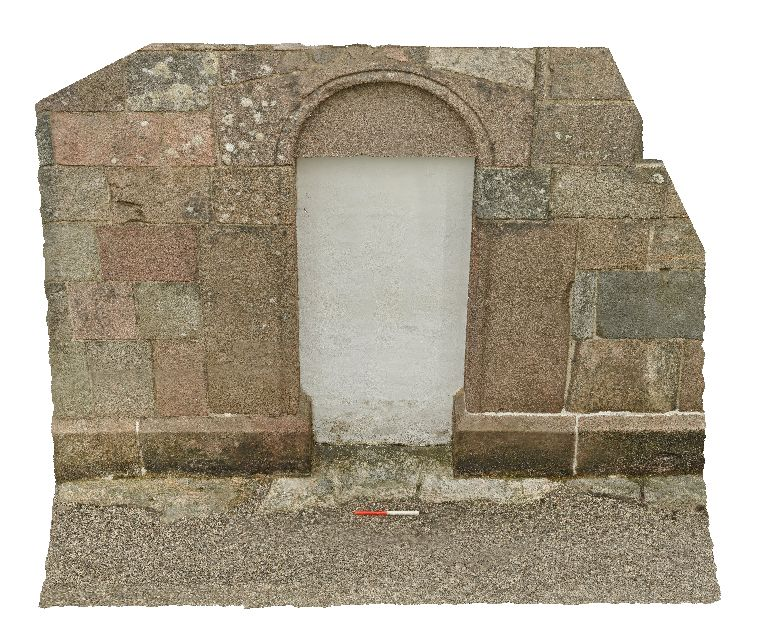
Der ebenfalls als 3D Datei angebotene Sjellebro Maskenstein und der Rimsø Runenstein machen da schon mehr her. Schaut's euch doch einfach mal selbst an!